Unidad 7 Simulación DES con simmer
7.1 Simulación
Algunos sistemas del mundo real contienen tal complejidad que es inviable representarlos íntegramente y de modo preciso a través de modelos analíticos; para estudiarlos sin embargo, podemos recurrir a la simulación. Robert E. Shannon32 define simulación como el proceso de diseñar un modelo de un sistema real y realizar experimentos con este modelo, con el propósito de comprender su comportamiento o de evaluar diversas estrategias para que el sistema opere (dentro de los límites impuestos por un criterio o conjunto de criterios). Dependiendo de la naturaleza del sistema a representar, hay varios tipos de simulación. Una taxonomía habitual común para clasificar los problemas de simulación lo hace considerando tres dimensiones:33
- Variación aleatoria: determinística vs. estocástica, es decir, bien se utilizan fórmulas determinísticas o bien se incorpora variabilidad estocástica.
- Variación en el tiempo: estática vs. dinámica, esto es, se simula un proceso estático que no varía a lo largo del tiempo, o uno dinámico que sí lo hace.
- Variación en la medida: continua vs. discreta, es decir, el resultado o output medible del proceso varía de modo continuo o lo hace a saltos discretos.
7.2 Simulación DES
La simulación de eventos discretos (Discrete Event Simulation -DES-) es una técnica específica para modelar sistemas estocásticos que evolucionan en el tiempo (son dinámicos) a saltos discretos, esto es, su estado cambia de forma discreta en instantes concretos a lo largo de instantes de tiempo que se secuencian según alguna ley de probabilidad.
Son ejemplos de procesos DES las colas de espera, los productos en una cadena de producción, e incluso los objetos digitales que se mueven en una red social. Su naturaleza discreta permite describir su comportamiento en términos de eventos, esto es, de una ocurrencia instantánea que puede cambiar el estado del sistema, mientras que entre eventos consecutivos todas las variables de estado van a permanecer invariables.
Las aplicaciones DES son muy numerosas: sistema de fabricación, ingeniería de la construcción, gestión de proyectos, logística, sistemas de transporte, procesos de negocios, salud, redes de comunicaciones, ….34 La simulación de tales sistemas nos proporciona información sobre el riesgo, eficiencia y efectividad de los procesos, e incluso nos permite estudiar los efectos de introducir cambios en el sistema. En servicios públicos nos permite estudiar cuellos de botella en colas, optimizar flujos de pacientes en los hospitales, testar la robustez de una cadena de producción o predecir el funcionamiento de un nuevo protocolo o configuración en una red de telecomunicaciones.
Existen tres aproximaciones básicas para proceder en la simulación DES:35
- Orientada a la actividad (activity-oriented): el modelo consiste en secuencias de actividades que esperan a ser ejecutadas dependiendo de ciertas condiciones; el reloj de simulación avanza a incrementos fijos de tiempo. En cada paso se escanea toda la lista de actividades y se verifican sus condiciones de ejecución. Este modo de simular es demasiado sensible a la elección del incremento de tiempos, dada la aleatoriedad de los tiempos en que suceden los eventos.
- Orientada a los eventos (event-oriented): mantiene una lista de eventos programados y ordenados por el tiempo en el que van a ocurrir. La simulación consiste en saltar de evento a evento, ejecutando secuencialmente las rutinas asociadas.
- Orientada a los procesos (process-oriented): refina la simulación orientada a eventos añadiendo procesos que interactúan y cuya activación es desencadenada por eventos. En este caso, el modelizador define un conjunto de procesos que corresponden a entidades u objetos del sistema real y su ciclo de vida.
7.3 Software
La librería simmer36 es un paquete de R para simulación DES que permite una modelización orientada a procesos de alto nivel. Además, explota el novedoso concepto de trayectoria: un camino común (o modo de comportamiento único) en el modelo de simulación para entidades (procesos) del mismo tipo (equivalentes). Aprovecha además la definición de flujos de trabajo en cadena (pipe) del paquete magrittr.37
La librería simmer se empezó a desarrollar en 2014 para resolver un problema de optimización de facilidades en servicios sanitarios, basada en la simulación de eventos discretos DES. Está implementada en C++ y de ahí su eficiencia.
´simmer` no es la única librería de simulación de procesos en R, donde contamos también con las librerías:
SpaDES,38 que se centra en modelos discretos espaciales;queuecomputer39 implementa un método eficiente para simular colas con llegadas y tiempos de servicio arbitrarios;queueing40 contiene múltiples funciones para analizar sistemas de colas.
Más allá del lenguaje R, los competidores directos de simmer son SimPy41 y SimJulia,42 construidos, respectivamente, bajo los lenguajes Python y Julia.
Instalamos y cargamos pues, las librerías vinculadas a simmer y otras generales básicas en R:
library(simmer)
library(simmer.bricks)
library(simmer.plot)
library(parallel)
library(dplyr)
library(tidyverse)7.4 Simulación con simmer
7.4.1 Conceptos clave
Para entender la Simulación de Eventos Discretos (DES), es preciso controlar cierta terminología específica, que se muestra a continuación:
Recurso (resource). Se trata de una entidad pasiva que no se mueve pero proporciona un servicio o realiza una actividad dirigida a las llegadas que se producen en el sistema. Todo recurso en
simmercontiene dos elementos auto-gestionados:- Servidor, que representa el recurso que da servicio o realiza la actividad, con una determinada capacidad y que puede ser accedido (seized) y abandonado (released).
- Cola: una cola priorizada de cierto tamaño (puede ser infinita), que se llena cuando el servidor está a plena capacidad.
Gestor (manager). Es una entidad activa, esto es, se trata de un proceso que tiene la habilidad de reajustar las propiedades de un recurso (como su capacidad y tamaño de la cola) a medida que transcurre el tiempo (run-time).
Fuente (source) es el proceso responsable de generar nuevas llegadas según un patrón de tiempos entre llegadas, y de integrarlas en el modelo de simulación.
Llegada (arrival). Es un proceso capaz de interaccionar con los recursos o con otras entidades del modelo de simulación. Puede tener atributos y valores de priorización asociados, y en general, tiene un tiempo de vida limitado. Tras su creación, cada llegada es integrada en una trayectoria dada.
Trayectoria (trajectory). Se trata de la secuenciación de actividades que definen el camino a seguir de cada una de las llegadas que acceden a ella. El modelo de simulación se representa por un conjunto de trayectorias.
Actividad (activity) es la unidad individual de acción que permite que las llegadas interactúen con los recursos y otras entidades, realicen rutinas mientras están en el sistema, retrocedan y avancen a lo largo de la trayectoria de forma dinámica, etc.
Todos los procesos son susceptibles de ser representados a través de diagramas de flujo. Es conveniente siempre representarlos, con el fin de ordenar y mostrar con claridad los caminos y secuenciaciones involucradas. Para crear diagramas de flujo disponemos de la simbología estándar ANSI para diagramas de flujo).
7.4.2 Entornos y trayectorias
La simulación con simmer, aunque se puede basar en los eventos, funciona mejor orientada a los procesos, esto es, enfocada a la identificación de fuentes y procesos y a las interacciones entre ellos. Utiliza dos elementos básicos:
- El entorno de simulación se almacena en un objeto simmer definido por el comando
env(), gestiona los recursos (resources) y las fuentes de llegadas (generators), controla la ejecución de la simulación y contiene los resultados de la simulación. - Las trayectorias, definidas con el comando
trajectory(), que contienen las secuencias de acciones o actividades que van a experimentar las llegadas. Cada actividad viene descrita por un verbo que representa una funcionalidad concreta (bloque funcional). El conjunto de acciones disponibles ensimmerlo estudiaremos en la sección Acciones.
Simular con simmer consiste, simplemente, en construir un entorno de simulación en el que se añaden recursos que dan servicios y se generan llegadas que acceden a trayectorias en las que desarrollan ciertas actividades y son atendidas por los recursos. Toda la sintaxis se encadena con el comando pipe %>%.
La Figura 7.1 ilustra de un modo sencillo la dinámica de simulación con simmer a partir de entornos y trayectorias: el simulador es inicializado con simmer y monitorizado con monitor. Cada simulador contiene entidades constituidas por procesos y recursos. A los procesos acceden las llegadas, provenientes de fuentes y reguladas por gestores, que realizan una serie de actividades que definen trayectorias y son ejecutadas por los recursos. Así mismo, los gestores pueden interaccionar con los recursos.
Figura 7.1: Figura 2. Entorno de simulación en simmer Fte: IBiDat
Aunque las trayectorias se definen de modo independiente a los entornos de simulación, se recomienda definir siempre el entorno en primer lugar (pues nombra recursos y llegadas), env=simmer(), para luego definir las trayectorias y completar el entorno con los recursos y las fuentes. Hay que tener en cuenta que las trayectorias y los entornos van a usar elementos comunes, con lo que la sintaxis ha se ser construida y revisada en paralelo.
Para hacer correr la simulación utilizamos el comando run(), con el que podemos especificar cuándo parar. El comando reset() nos permite resetear una simulación.
Las trajectorias se pueden seccionar con el operador de selección [], juntar con join() y modificar con el operador =. Hay muchas actividades disponibles en simmer para incorporar en trayectorias y que presentaremos categorizadas más adelante, según su funcionalidad.
Veamos un ejemplo de un modelo de simulación sencillo en el que llegan clientes a una tienda cada minuto (durante 3 minutos), miran los productos durante 5 minutos y se van.
env=simmer()
# Se define la trayectoria "tienda" con la actividad que realizan los clientes
tienda=trajectory() %>%
# Lanza un mensaje de aviso de llegada
log_("Llega a la tienda") %>%
# mira productos 5min
timeout(5) %>%
# Lanza un mensaje de aviso de llegada
log_("Sale de la tienda")
# se lanza el entorno de simulación incluyendo el generador de llegadas
# (clientes), que aparecen en tres instantes de tiempo,
# y que son dirigidos a la trayectoria "tienda"
env=env %>%
add_generator("cliente", tienda,at(1,2,3)) %>%
# se muestran los resultados en pantalla
print() %>%
# se lanza el sistema
run()## simmer environment: anonymous | now: 0 | next: 0
## { Monitor: in memory }
## { Source: cliente | monitored: 1 | n_generated: 0 }
## 1: cliente0: Llega a la tienda
## 2: cliente1: Llega a la tienda
## 3: cliente2: Llega a la tienda
## 6: cliente0: Sale de la tienda
## 7: cliente1: Sale de la tienda
## 8: cliente2: Sale de la tiendaAl visualizar el output, apreciamos que llegan tres clientes en los instantes 1,2,3. Cada cliente permanece en la tienda durante 5 minutos inspeccionando la mercancía, y después sale en los instantes 6, 7 y 8 respectivamente. En las actividades y generadores de llegadas hemos utilizado parámetros fijos, pero los podemos hacer aleatorios. Adaptemos el ejemplo anterior a tiempos aleatorios uniformes entre llegadas y tiempos de permanencia aleatorios normales.
env=simmer()
tienda=trajectory() %>%
log_("Llega a la tienda") %>%
# Cada cliente permanece en la tienda mirando productos aprox. 5min
timeout(function() rnorm(1,5,1)) %>%
log_("Sale de la tienda")
env=env %>%
# el tiempo entre llegadas de los clientes es aleatorio entre 0 y 2 min.
add_generator("cliente", tienda,function() runif(1,0,2)) %>%
print() %>%
# simulamos hasta el instante 10
run(10) ## simmer environment: anonymous | now: 0 | next: 0
## { Monitor: in memory }
## { Source: cliente | monitored: 1 | n_generated: 0 }
## 1.20152: cliente0: Llega a la tienda
## 1.51594: cliente1: Llega a la tienda
## 2.51149: cliente2: Llega a la tienda
## 3.76426: cliente0: Sale de la tienda
## 4.05654: cliente3: Llega a la tienda
## 4.12502: cliente4: Llega a la tienda
## 4.51636: cliente5: Llega a la tienda
## 5.29376: cliente6: Llega a la tienda
## 5.96187: cliente1: Sale de la tienda
## 6.65052: cliente7: Llega a la tienda
## 8.58992: cliente3: Sale de la tienda
## 8.6116: cliente8: Llega a la tienda
## 8.65991: cliente2: Sale de la tienda
## 8.88082: cliente4: Sale de la tienda
## 9.67203: cliente9: Llega a la tienda
## 9.73449: cliente10: Llega a la tiendaAhora vemos en la primera columna los instantes de tiempo en que llegan y se van los clientes.
7.4.3 Recursos
Recordemos que un recurso, que proporciona servicio a las llegadas, en la simulación DES tiene dos componentes internos: un servidor y una cola. Todo recurso va a ser definido por tres parámetros:
- el nombre (name) del recurso o servidor,
- la capacidad (capacity) del recurso, y
- el tamaño de la cola (queue_size) en la que esperan las llegadas a que haya algún recurso disponible; representa el aforo de la sala de espera; cuando es cero significa que no hay posibilidad de cola.
Los recursos se definen con la sintaxis:
add_resource(.env, name, capacity = 1, queue_size = Inf, mon = TRUE,
preemptive = FALSE, preempt_order = c("fifo", "lifo"),
queue_size_strict = FALSE, queue_priority = c(0, Inf))El argumento capacity indica cuántos servidores hay en el sistema, y queue_size el tamaño de la cola de espera. Por defecto, los recursos son monitorizados (mon=TRUE) y no preferentes (preemptive = FALSE). La preferencia significa que si aparece una llegada con prioridad alta, el recurso detendrá temporalmente el procesado de las llegadas que esté atendiendo y tengan menos prioridad, y atenderá la preferente. En los recursos preferentes, preemptive = TRUE el parámetro preempt_order define qué llegada debe priorizarse según una política FIFO (First in, first out)o LIFO (Last in, first out). Todas las llegadas con mayor preferencia son ubicadas en una cola especial que tiene mayor prioridad que la cola principal, y en consecuencia se atienden antes. Además, el parámetro queue_size_strict controla si esta cola especial de llegadas preferentes debe ser tenida en cuenta para calcular el tamaño límite de la cola; si este parámetro impone el límite, entonces los rechazos se producirán en la cola principal.
Para ampliar información, consultar el Manual de Referencia sobre add_resource.
Cuando tenemos recursos en el sistema que dan un servicio, surgen dos acciones básicas que son: seize o asignación a un recurso, y release o desocupación del recurso. Por supuesto, si una llegada no puede ser atendida por un servidor (recurso) libre, puede esperar en cola si hay hueco en la cola, o ser rechazada si no lo hay.
Transformemos el ejemplo anterior en clientes que llegan aleatoriamente a una tienda. Ahora al llegar, cada cliente mira productos alrededor de 5 minutos, luego busca a un dependiente para ser atendido o espera hasta que uno esté desocupado, este lo atiende por aproximadamente 10 minutos y luego se va. Supongamos que hay 2 dependientes en la tienda.
set.seed(999)
env=simmer()
# Actividades que se desarrollan en la tienda
tienda=trajectory() %>%
log_(function() "Llega a la tienda") %>%
# mira productos aprox. 5min
timeout(function() rnorm(1,5,1)) %>%
# es asignado a un dependiente
log_(function() "Busca un dependiente") %>%
seize("dependiente",1) %>%
# que lo antiende aprox. 10min.
log_("Es atendido") %>%
timeout(function() rnorm(1,10,1)) %>%
# desocupa al dependiente
release("dependiente",1)%>%
# sale de la tienda
log_(function() "Sale de la tienda")
env=env %>%
# simulación (uniforme(0,5) del tiempo entre llegadas de clientes
add_generator("cliente", tienda,function() runif(1,0,5)) %>%
# dimensionamiento de recursos: dos dependientes
add_resource("dependiente",2) %>%
print() %>%
run(20) %>% # simulamos hasta ese instante
# monitorizamos los recursos (dependientes)
get_mon_resources()## simmer environment: anonymous | now: 0 | next: 0
## { Monitor: in memory }
## { Resource: dependiente | monitored: TRUE | server status: 0(2) | queue status: 0(Inf) }
## { Source: cliente | monitored: 1 | n_generated: 0 }
## 1.94536: cliente0: Llega a la tienda
## 4.86066: cliente1: Llega a la tienda
## 5.6328: cliente0: Busca un dependiente
## 5.6328: cliente0: Es atendido
## 8.68238: cliente1: Busca un dependiente
## 8.68238: cliente1: Es atendido
## 8.79439: cliente2: Llega a la tienda
## 11.55: cliente3: Llega a la tienda
## 11.9157: cliente2: Busca un dependiente
## 12.0631: cliente4: Llega a la tienda
## 14.2341: cliente0: Sale de la tienda
## 14.2341: cliente2: Es atendido
## 15.9421: cliente4: Busca un dependiente
## 16.1694: cliente5: Llega a la tienda
## 17.3468: cliente3: Busca un dependiente
## 18.9358: cliente6: Llega a la tienda
## 18.9865: cliente1: Sale de la tienda
## 18.9865: cliente4: Es atendidoVisualizamos a los clientes: cuándo llegan, cuándo son atendidos por un dependiente y cuándo se van de la tienda. Para los dependientes (recursos) vemos los instantes de tiempo (time) en los que inician un servicio o se les añade algún cliente en cola, el número de dependientes ocupados (server) y el número de clientes esperando ser atendidos (queue).
7.4.4 Fuentes
Una fuente de llegadas, clientes o productos de un sistema de simulación es definida con tres parámetros principales:
- name_prefix, el nombre con el que identificamos cada llegada que se genera
- trajectory, la trayectoria a la que accede
- distribution, la distribución de los tiempos entre llegadas.
Hay dos tipos de fuentes: generadores y fuentes de datos (dataframes), a las que accedemos respectivamente con los comandos add_generator() y add_dataframe().
- Generadores, proporcionados con el comando
add_generator(), que genera tiempos dinámicos entre llegadas a partir de una función (distribución) que define el usuario.
Ejemplifiquemos las posibilidades de generación de tiempos de llegadas con el ejemplo anterior que ya realizamos, en el que al entrar cada cliente, pasa 5 minutos en el sistema y luego se marcha.
env=simmer()
# defino la función de los tiempos entre llegadas, U(0,2)
distr <- function() runif(1, 0, 2)
# definimos laa acciones que hace el cliente en la tienda
tienda <- trajectory() %>%
timeout(5)
env %>%
# los tiempos entre llegadas se simulan de "distr"
add_generator("llegada_random", tienda, distr) %>%
# las llegadas ocurren en los instantes 0, 1, 10, 30, 40 y 43
add_generator("llegada_at", tienda, at(0,1,10,30,40,43)) %>%
# los tiempos entre llegadas se simulan de "distr", empezando en el instante 1
add_generator("llegada_from", tienda, from(1, distr)) %>%
# los tiempos entre llegadas se simulan de "distr", acabando en el instante 5
add_generator("llegada_to", tienda, to(5, distr)) %>%
# los tiempos entre llegadas se simulan de "distr", empezando en 1 y acabando en 5
add_generator("llegada_from_to", tienda, from_to(1, 5, distr, every=4)) %>%
run(15) %>%
# monitorizamos todas las llegadas
get_mon_arrivals()## name start_time end_time activity_time finished replication
## 1 llegada_at0 0.0000000 5.000000 5 TRUE 1
## 2 llegada_random0 0.1729814 5.172981 5 TRUE 1
## 3 llegada_to0 0.4509553 5.450955 5 TRUE 1
## 4 llegada_at1 1.0000000 6.000000 5 TRUE 1
## 5 llegada_from0 1.0000000 6.000000 5 TRUE 1
## 6 llegada_from_to0 1.0000000 6.000000 5 TRUE 1
## 7 llegada_random1 1.2274626 6.227463 5 TRUE 1
## 8 llegada_to1 1.6187369 6.618737 5 TRUE 1
## 9 llegada_from1 2.0801778 7.080178 5 TRUE 1
## 10 llegada_from2 2.1182239 7.118224 5 TRUE 1
## 11 llegada_from_to1 2.7380298 7.738030 5 TRUE 1
## 12 llegada_random2 2.8600575 7.860058 5 TRUE 1
## 13 llegada_from_to2 2.9572654 7.957265 5 TRUE 1
## 14 llegada_from3 2.9890172 7.989017 5 TRUE 1
## 15 llegada_to2 3.1719196 8.171920 5 TRUE 1
## 16 llegada_to3 3.8909441 8.890944 5 TRUE 1
## 17 llegada_from4 3.9343827 8.934383 5 TRUE 1
## 18 llegada_from_to3 4.4370700 9.437070 5 TRUE 1
## 19 llegada_to4 4.4642147 9.464215 5 TRUE 1
## 20 llegada_random3 4.4702904 9.470290 5 TRUE 1
## 21 llegada_random4 4.5808807 9.580881 5 TRUE 1
## 22 llegada_to5 4.7246900 9.724690 5 TRUE 1
## 23 llegada_from_to4 4.9288147 9.928815 5 TRUE 1
## 24 llegada_from_to5 5.0000000 10.000000 5 TRUE 1
## 25 llegada_from5 5.1656520 10.165652 5 TRUE 1
## 26 llegada_from6 5.5418947 10.541895 5 TRUE 1
## 27 llegada_random5 6.0601800 11.060180 5 TRUE 1
## 28 llegada_random6 6.1803417 11.180342 5 TRUE 1
## 29 llegada_from7 6.7354383 11.735438 5 TRUE 1
## 30 llegada_from_to6 6.7442407 11.744241 5 TRUE 1
## 31 llegada_from8 7.6346328 12.634633 5 TRUE 1
## 32 llegada_random7 7.6924460 12.692446 5 TRUE 1
## 33 llegada_from_to7 8.4122507 13.412251 5 TRUE 1
## 34 llegada_from_to8 9.0000000 14.000000 5 TRUE 1
## 35 llegada_random8 9.2487709 14.248771 5 TRUE 1
## 36 llegada_from9 9.6174449 14.617445 5 TRUE 1También podemos desencadenar llegadas a demanda desde otra trayectoria. Sería el ejemplo de un operador, que en el momento en que ficha digitalmente como trabajador de la empresa, se incorpora a trabajar durante una jornada parcial de 3 horas:
# jornada de trabajo
t0 <- trajectory() %>%
timeout(3)
# activa "Trabajar": la jornada de trabajo
t1 <- trajectory() %>%
activate("Trabajar")
simmer() %>%
# simula llegadas al trabajo cuando "Trabajar" esté activado
add_generator("Trabajar", t0, when_activated()) %>%
# simula una llegada a fichar
add_generator("Fichado digital", t1, at(8)) %>%
run() %>%
get_mon_arrivals()## name start_time end_time activity_time finished replication
## 1 Fichado digital0 8 8 0 TRUE 1
## 2 Trabajar0 8 11 3 TRUE 1La sintaxis que se utiliza para generar llegadas es:
add_generator(.env, name_prefix, trajectory, distribution, mon = 1,
priority = 0, preemptible = priority, restart = FALSE)El argumento mon permite especificar si queremos que el simulador monitoree las llegadas: 0 = sin monitoreo, 1 = monitoreo simple de llegadas simple, 2 = monitoreo simple y de atributos de las llegadas. Por defecto tendremos mon=1. En el argumento distribution se pueden utilizar funciones definidas por el usuario para los tiempos entre llegadas y también, como hemos visto, at(), from(), to() y from_to(). Si hay un sistema de prioridades, se especificaría con priority=1, y qué hacer para las llegadas preferentes o prioritarias, en los argumentos preemptible y restart.
Para ampliar información, consultar el Manual de Referencia sobre add_generator.
- Fuentes de datos con tiempos entre llegadas, provenientes de un data frame que vincula el usuario con el comando
add_dataframe():
add_dataframe(.env, name_prefix, trajectory, data, mon = 1, batch = 50,
col_time = "time", time = c("interarrival", "absolute"),
col_attributes = NULL, col_priority = "priority",
col_preemptible = col_priority, col_restart = "restart")Ambos generadores o fuentes de llegadas se reprograman a sí mismos para ciclarse hasta agotar el tiempo de simulación, en el caso de que este supere el rango inicial.
Para ampliar información, consultar el Manual de Referencia sobre add_generator y add_dataframe.
7.4.5 Atributos
Falta por completar información.
7.4.6 Monitoreo
Al ejecutar un entorno de simulación, si no incluimos ninguna opción de visualización de mensajes en la trayectoria, obtenemos en pantalla un resumen escrito básico sobre recursos y llegadas.
trayectoria=trajectory() %>%
timeout(3)
simmer() %>%
add_generator("llegada",trayectoria,at(0,1,2)) %>%
run() ## simmer environment: anonymous | now: 5 | next:
## { Monitor: in memory }
## { Source: llegada | monitored: 1 | n_generated: 3 }Al añadir en la ejecución del entorno el comando print() (antes de run()), se monitorizan los eventos que se van sucediendo en la simulación y dónde se almacenan (Monitor).
simmer() %>%
add_generator("llegada",trayectoria,at(0,1,2)) %>%
print() %>%
run() ## simmer environment: anonymous | now: 0 | next: 0
## { Monitor: in memory }
## { Source: llegada | monitored: 1 | n_generated: 0 }## simmer environment: anonymous | now: 5 | next:
## { Monitor: in memory }
## { Source: llegada | monitored: 1 | n_generated: 3 }El comando invisible (después de run()) depura la salida para no visualizar nada (salvo que hayamos incorporado mensajes en las trayectorias).
simmer() %>%
add_generator("llegada",trayectoria,at(0,1,2)) %>%
run() %>%
invisibleSi queremos visualizar mensajes específicos vinculados a las llegadas y actividades conforme se suceden, habremos de incluir mensajes en las trayectorias a través del comando log_().
env=simmer()
trayectoria=trajectory() %>%
log_("Llegada contabilizada.") %>%
timeout(3)
env=env %>%
add_generator("llegada",trayectoria,function() rexp(1,1/2)) %>%
run(5) %>%
invisibleUna vez lanzamos un sistema de simulación, disponemos de diversos métodos para extraer información de él y monitorizarla por ejemplo con el comando log_():
now()el tiempo de simulación actualpeek(n)instantes de tiempo en los que acontecerán los siguientes \(n\) eventosget_*()para obtener información de recursos, atributos y fuentes:attribute,capacity,global,name,n_activities,n_generated,prioritization,queue_count,queue_size,resources,seized,server_count,sources,trajectory.
env %>%
peek(3)## [1] 5.35573 5.35573Con el comando stepn() podemos hacer correr el sistema durante una única simulación adicional, que no se almacena en el objeto de simulación salvo que lo asignemos a él.
env=env %>%
stepn() %>%
print()## 5.35573: llegada0: Llegada contabilizada.
## simmer environment: anonymous | now: 5.35572961320109 | next: 5.35572961320109
## { Monitor: in memory }
## { Source: llegada | monitored: 1 | n_generated: 1 }Los comandos para monitorizar se pueden aplicar a un único entorno de simulación o a una lista de entornos, y el objeto de retorno es siempre un data frame, incluso si no se encuentran datos. Cada entorno de simulación procesado se trata como una replicación diferente, y se identifica como tal en una columna numérica denominada replication en el dataframe de retorno, con los índices de los entornos como valores. Recuperamos llegadas, recursos y atributos del sistema con los comandos:
get_mon_arrivals()devuelve la información temporal por llegada: nombre (name) de la llegada, tiempo de llegada (start_time), tiempo de salida (end_time), tiempo en la actividad sin estar en la cola (activity_time) y una etiqueta finished que indica si la llegada finalizó sus actividades. Por defecto esta información se refiere al tiempo de vida completo de las llegadas, pero se puede obtener por recurso con el argumentoper_resource=TRUE.get_mon_resources()devuelve los cambios de estado en los recursos: nombre del recurso (resource), instante (time) del evento que desencadenó el cambio de estado, contador de unidades en servicio (server), contador de unidades en la cola (queue), capacidad (capacity), tamaño de la cola (queue_size), contador del sistema (system=server+queue), y límite del sistema (limit=capacity+queue_size).get_mon_atributes()devuelve los cambios de estado en los atributos: nombre (name) del atributo, instante (time) del evento que desencadenó el cambio de estado, nombre (key) que identifica el atributo y valor (value).
llegadas=get_mon_arrivals(env)
llegadas
atributos=get_mon_attributes(env)
atributos
recursos=get_mon_resources(env)
recursosEjemplifiquemos su funcionamiento sobre el sistema sencillo de la tienda que ya vimos anteriormente, con tiempos para mirar al llegar a la tienda, seguidos de atención por dependientes.
env=simmer()
tienda=trajectory() %>%
log_(function() "Llega a la tienda") %>%
timeout(function() rnorm(1,5,1)) %>% # mira productos aprox. 5min
seize("dependiente",1) %>%
log_("Es atendido") %>%
timeout(function() rnorm(1,10,1)) %>%
release("dependiente",1)%>%
log_(function() "Sale de la tienda")
env=env %>%
add_generator("cliente", tienda,function() runif(1,0,5)) %>% # tiempo entre llegadas
add_resource("dependiente",2) %>% # hay dos dependientes
print() %>%
run(20) # simulamos hasta ese instante## simmer environment: anonymous | now: 0 | next: 0
## { Monitor: in memory }
## { Resource: dependiente | monitored: TRUE | server status: 0(2) | queue status: 0(Inf) }
## { Source: cliente | monitored: 1 | n_generated: 0 }
## 1.13087: cliente0: Llega a la tienda
## 1.79667: cliente1: Llega a la tienda
## 4.27508: cliente2: Llega a la tienda
## 4.37577: cliente3: Llega a la tienda
## 5.20351: cliente4: Llega a la tienda
## 7.07315: cliente1: Es atendido
## 7.63425: cliente5: Llega a la tienda
## 7.96535: cliente0: Es atendido
## 12.2561: cliente6: Llega a la tienda
## 14.623: cliente7: Llega a la tienda
## 15.7281: cliente8: Llega a la tienda
## 16.2301: cliente9: Llega a la tienda
## 16.297: cliente10: Llega a la tienda
## 17.1866: cliente11: Llega a la tienda
## 17.6022: cliente12: Llega a la tienda
## 18.3314: cliente0: Sale de la tienda
## 18.3314: cliente2: Es atendido
## 18.7997: cliente1: Sale de la tienda
## 18.7997: cliente3: Es atendidollegadas=get_mon_arrivals(env)
llegadas## name start_time end_time activity_time finished replication
## 1 cliente0 1.130873 18.33144 17.20057 TRUE 1
## 2 cliente1 1.796671 18.79968 17.00301 TRUE 1atributos=get_mon_attributes(env)
atributos## [1] time name key value
## <0 rows> (or 0-length row.names)recursos=get_mon_resources(env)
recursos## resource time server queue capacity queue_size system limit replication
## 1 dependiente 7.073150 1 0 2 Inf 1 Inf 1
## 2 dependiente 7.965346 2 0 2 Inf 2 Inf 1
## 3 dependiente 9.788494 2 1 2 Inf 3 Inf 1
## 4 dependiente 9.958040 2 2 2 Inf 4 Inf 1
## 5 dependiente 11.436010 2 3 2 Inf 5 Inf 1
## 6 dependiente 14.378664 2 4 2 Inf 6 Inf 1
## 7 dependiente 17.431417 2 5 2 Inf 7 Inf 1
## 8 dependiente 18.331441 2 4 2 Inf 6 Inf 1
## 9 dependiente 18.799679 2 3 2 Inf 5 Inf 1También podemos derivar el output de un entorno de simulación a ficheros ‘csv’ (con monitor_csv) o de otro tipo, como ‘.txt’ especificando los delimitadores (con monitor_delim), con todas las llegadas (arrivals), atributos (attributes), salidas (releases) y recursos (resources), almacenándolas en el directorio temporal tempdir() o en nuestro propio directorio de trabajo.
mon <- monitor_csv(path=tempdir()) # tempdir() lo podemos sustituir por nuestro directorio de trabajo
mon # nos muestra la ubicación y nombre de los ficheros## simmer monitor: to disk (delimited files)
## { arrivals: /var/folders/m7/28kglwg91xjbzq3fpmfgdw4c0000gn/T//RtmpRmHxpu/file140fd59ef7fa9_arrivals.csv }
## { releases: /var/folders/m7/28kglwg91xjbzq3fpmfgdw4c0000gn/T//RtmpRmHxpu/file140fd59ef7fa9_releases.csv }
## { attributes: /var/folders/m7/28kglwg91xjbzq3fpmfgdw4c0000gn/T//RtmpRmHxpu/file140fd59ef7fa9_attributes.csv }
## { resources: /var/folders/m7/28kglwg91xjbzq3fpmfgdw4c0000gn/T//RtmpRmHxpu/file140fd59ef7fa9_resources.csv }env_mon=simmer(mon=mon)
tienda=trajectory() %>%
log_(function() "Llega a la tienda") %>%
timeout(function() rnorm(1,5,1)) %>% # mira productos aprox. 5min
seize("dependiente",1) %>%
log_("Es atendido") %>%
timeout(function() rnorm(1,10,1)) %>%
release("dependiente",1)%>%
log_(function() "Sale de la tienda")
env_mon=env_mon %>%
add_generator("cliente", tienda,function() runif(1,0,5)) %>% # tiempo entre llegadas
add_resource("dependiente",2) %>% # hay dos dependientes
print() %>%
run(20) # simulamos hasta ese instante## simmer environment: anonymous | now: 0 | next: 0
## { Monitor: to disk (delimited files) }
## { arrivals: /var/folders/m7/28kglwg91xjbzq3fpmfgdw4c0000gn/T//RtmpRmHxpu/file140fd59ef7fa9_arrivals.csv }
## { releases: /var/folders/m7/28kglwg91xjbzq3fpmfgdw4c0000gn/T//RtmpRmHxpu/file140fd59ef7fa9_releases.csv }
## { attributes: /var/folders/m7/28kglwg91xjbzq3fpmfgdw4c0000gn/T//RtmpRmHxpu/file140fd59ef7fa9_attributes.csv }
## { resources: /var/folders/m7/28kglwg91xjbzq3fpmfgdw4c0000gn/T//RtmpRmHxpu/file140fd59ef7fa9_resources.csv }
## { Resource: dependiente | monitored: TRUE | server status: 0(2) | queue status: 0(Inf) }
## { Source: cliente | monitored: 1 | n_generated: 0 }
## 2.12099: cliente0: Llega a la tienda
## 4.06522: cliente1: Llega a la tienda
## 4.31647: cliente2: Llega a la tienda
## 6.60486: cliente3: Llega a la tienda
## 6.66412: cliente0: Es atendido
## 9.19662: cliente2: Es atendido
## 11.5799: cliente4: Llega a la tienda
## 14.204: cliente5: Llega a la tienda
## 16.2476: cliente0: Sale de la tienda
## 16.2476: cliente1: Es atendido
## 18.7205: cliente6: Llega a la tiendapara a continuación cargar los datos de estos ficheros y trabajar sobre ellos,
llegadas=read.csv(mon$handlers$arrivals)
llegadas## name start_time end_time activity_time finished
## 1 cliente0 2.120993 16.24759 14.12659 1# que contiene la misma información (salvo "replication") que
get_mon_arrivals(env_mon)## name start_time end_time activity_time finished replication
## 1 cliente0 2.120993 16.24759 14.12659 1 1Una vez extraída la información simulada para monitorizar el proceso y realizar análisis, con el paquete simmer.plot (Ucar and Smeets, 2019b) tenemos métodos de graficado para visualizar rápidamente el uso de un recurso o una llegada a lo largo del tiempo.
Para las llegadas se pintan gráficos de líneas, con tres opciones o métricas posibles:
- activity_time es la cantidad de tiempo que consume en actividades cada llegada;
- flow_time es la cantidad de tiempo que consume cada llegada en el sistema, y se calcula con: ‘flow = end_time - start_time.’
- waiting_time es la cantidad de tiempo que una llegada espera a ser atendida o ejecutada, y se calcula con: ‘waiting_time = flow_time - activity_time.’
arrivals=get_mon_arrivals(env_mon)
plot(arrivals, metric="waiting_time")## `geom_smooth()` using method = 'loess' and formula 'y ~ x'## geom_path: Each group consists of only one observation. Do you need to adjust the group
## aesthetic?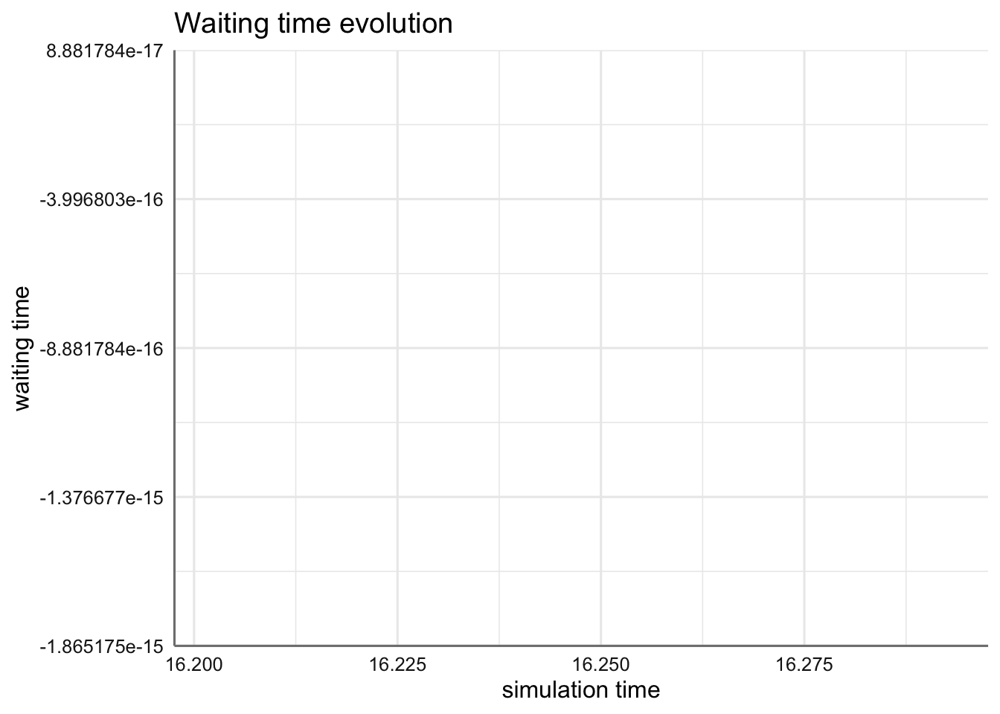
plot(arrivals, metric="activity_time")## `geom_smooth()` using method = 'loess' and formula 'y ~ x'
## geom_path: Each group consists of only one observation. Do you need to adjust the group
## aesthetic?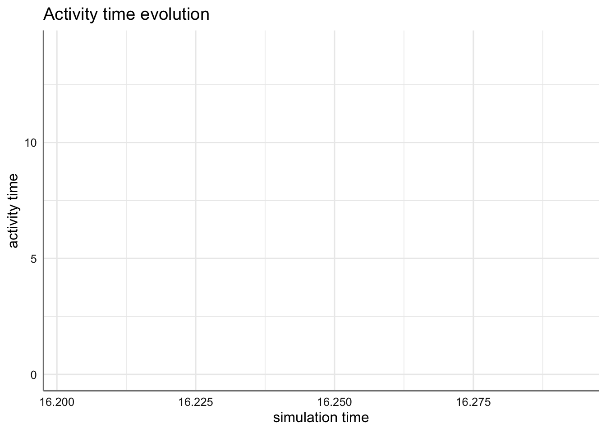
plot(arrivals, metric="flow_time")## `geom_smooth()` using method = 'loess' and formula 'y ~ x'
## geom_path: Each group consists of only one observation. Do you need to adjust the group
## aesthetic?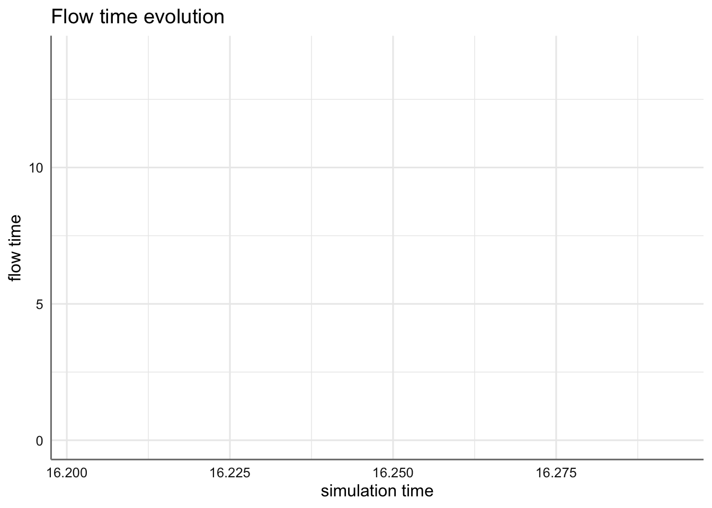
Para los recursos, tenemos dos métricas de graficado:
- usage muestra un gráfico de líneas con el tiempo promedio de uso (acumulado) de cada recurso, replication e item (por defecto queue, server y system, que es la suma de servidor y cola). Si steps=TRUE, se pinta un gráfico de escaleras con los valores instantáneos.
- utilization muestra un gráfico de barras con el promedio de uso del recurso (tiempo total en uso, dividido por el tiempo total de simulación). Para replicaciones múltiples, la barra representa la mediana y las barras de error los cuartiles. Si se proporciona una única replicación, la barra y la barra de error coinciden.
Teniendo en cuenta que get_mon proporciona objetos data.frame, podemos utilizar cualquier otro tipo de gráfico específico y personalizado con las funciones gráficas habituales de R, y en particular de ‘ggplot2.’
arrivals=get_mon_arrivals(env_mon)
ggplot(arrivals,aes(x=activity_time))+
geom_histogram(fill="Skyblue",color="blue")## `stat_bin()` using `bins = 30`. Pick better value with `binwidth`.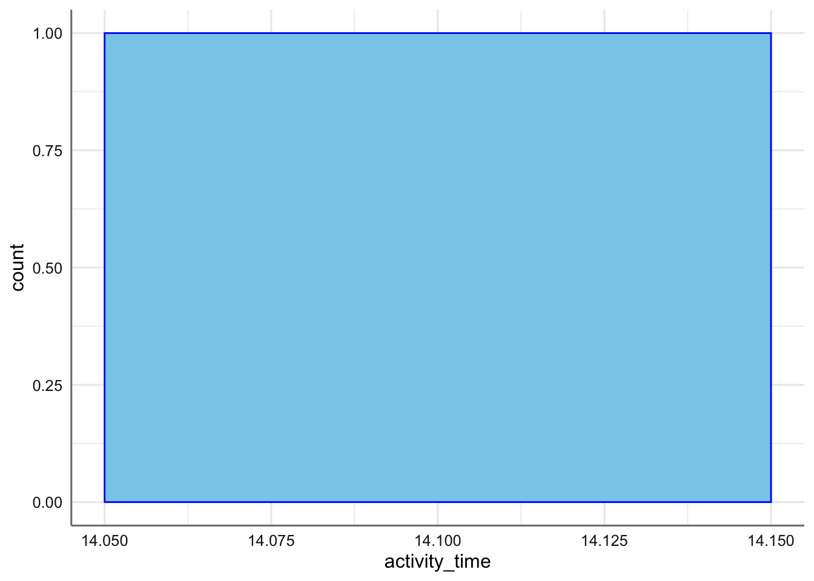
7.5 Acciones
Las acciones posibles para definir trayectorias las presentamos a continuación, categorizadas según su funcionalidad:
| Funciones | comandos |
|---|---|
| atributos en llegadas | set_attribute, get_attribute, set_prioritization, get_prioritization |
| interacción con recursos | seize, release, set_capacity, set_queue_size, set_seize_selected, set_capacity_selected |
| interacción con fuentes | activate, deactivate, set_trajectory, set_source |
| ramificación | branch, clone |
| bucles | rollback |
| ejecución en lotes | batch |
| programación asíncrona | send, wait, trap, untrap |
| renuncias | leave, renege_in, renege_if, renege_abort |
simmer.
Figura 7.2: Figura 3. Principales acciones en trayectorias simmer. Fte: IBiDat
7.6 Atributos en llegadas
Las llegadas pueden almacenar y modificar atributos con el comando set_attribute(). Los atributos consisten en pares (key,value) que por defecto se asignan por llegada, salvo que se definan globalmente.
proporcionan el nombre (carácter) de la llegada (key) que, y el valor que toma (value). Estos atributos pueden ser definidos de modo particular a cada llegada, o de modo global. Los atributos keys y values pueden ser vectores o funciones que devuelvan vectores.
Se especifica con el comando set_attribute:
set_attribute(keys, values, mod = c(NA, "+", "*"), init = 0)que incluye o modifica unos atributos numéricos (values) a una llegada o un conjunto de llegadas especificados en el vector keys. Las modificaciones se gestionan a través del parámetro mod, que incluye las operaciones más habituales (suma y producto).
Los atributos se pueden recuperar con el comando get_attribute(.env, keys), siempre que se haya definido previamente un objeto simmer (.env).
Por ejemplo, el siguiente modelo define una entrada en la que se da el valor 60 a peso, luego le suma 1 y visualiza el resultado, que es “Mi peso es 61”:
env=simmer()
traj=trajectory() %>%
# asignamos el atributo numérico a peso
set_attribute("peso",60) %>%
# a continuación lo modificamos
set_attribute("peso",1,mod="+") %>%
# y por último lo visualizamos
log_(function() paste("Mi peso es",get_attribute(env,"peso")))
env=env %>%
add_generator("peso",traj,at(1)) %>%
print() %>%
run()## simmer environment: anonymous | now: 0 | next: 0
## { Monitor: in memory }
## { Source: peso | monitored: 1 | n_generated: 0 }
## 1: peso0: Mi peso es 61Las llegadas además, están sujetas a tres posibles valores de prioridad para acceder a los recursos y que son definidas a través del comando set_prioritization,
set_prioritization(.trj, values, mod = c(NA, "+", "*"))a través del argumento values=c(priority,preemptible,restart) para todas las llegadas que se crean provenientes de cualquier fuente. El significado de estos argumentos es es siguiente:
- prioridad (priority); un valor más alto implica mayor prioridad. El valor por defecto es la mínima prioridad, representada por el 0.
- prevención (preemptible); si un recurso es accedido, este valor establece la mínima prioridad de acceso que puede prevenir una llegada, es decir, el acceso al recurso. Si un recurso tiene ‘prevencion=2’ y se produce una llegada con ‘prioridad=3,’ la actividad previa se interrumpe y accede al recurso esta llegada, puesto que su orden de prioridad es mayor al de prevención.
En cualquier caso, preemtible debe ser mayor o igual que priority, y por lo tanto sólo las llegadas con prioridad más alta pueden desencadenar una prevención o suspensión inesperada por tener llegadas con mayor prioridad.
- reinicio (restart), cuando se ha producido una prevención, indica si al finalizar la actividad con la llegada preferente, el recurso ha de reanudar (TRUE) la actividad previa que hubo de suspender o no (0).
El argumento mod permite modificar y cambiar de forma dinámica por llegada. Con get_prioritization(.env) se obtienen los valores de priorización para acceder a los recursos.
7.7 Interacción con recursos
Las dos actividades principales para interaccionar con recursos son seize() -acceso- y release() -salida-. Un recurso o conjunto de recursos (amount) entran en funcionamiento con seize() y dejan de funcionar con release().
seize(.trj, resource, amount = 1, continue = NULL, post.seize = NULL,reject = NULL)
release(.trj, resource, amount = 1)La actividad seize() es especial en el sentido de que el resultado o salida depende del estado del recurso. Una llegada, cuando accede a un recurso, puede aprovecharlo con éxito desde el momento en que accede y continuar su camino en la trayectoria, pero también puede ponerse en cola (si el recurso está ocupado) o ser rechazada y despedida de la trayectoria. Para manejar estos casos especiales con total flexibilidad, seize() soporta la especificación de dos sub-trayectorias opcionales:
post.seize, que es la actividad que sigue despues de un seize exitoso, yreject, que es la actividad que sigue si la llegada ha sido rechazada.
Como en todas las actividades que soportan la definición de sub-trayectorias, hay un parámetro booleano llamado continue. Para cada sub-trayectoria, este parámetro controla si las llegadas deberían continuar a la actividad que sigue a seize() en la trayectoria principal después de ejecutar la sub-trayectoria.
Para ejemplificar su uso consideramos un ambulatorio médico al que llegan pacientes. Si al llegar el paciente, el doctor está disponible, es atendido por este durante 5 minutos. Si no está disponible, es rechazado y derivado a consulta de enfermería, donde es atendido siempre 8 minutos, al haber 10 enfermeras disponibles. En ambos casos el paciente se va del ambulatorio al terminar la consulta a la que haya entrado.
env=simmer()
traj=trajectory() %>%
log_(function() paste("Llega el ",get_name(env))) %>%
seize(
"doctor",1,continue=c(TRUE,FALSE),
post.seize=trajectory("Paciente aceptado") %>%
log_("Pasa a consulta con el doctor"),
reject=trajectory("Paciente rechazado") %>%
log_("El doctor está ocupado y es derivado a enfermería") %>%
seize("nurse",1) %>%
log_("Pasa a consulta con la enfermera") %>%
timeout(8) %>%
release("nurse",1) %>%
log_(function() paste("El",get_name(env), "sale de enfermería"))) %>%
timeout(5) %>%
release("doctor",1) %>%
log_("El doctor ya está libre")
env=env %>%
add_resource("doctor",capacity=1,queue_size=0) %>%
add_resource("nurse",capacity=10,queue_size=0) %>%
add_generator("paciente",traj,at(0,1,5,8)) %>%
run()## 0: paciente0: Llega el paciente0
## 0: paciente0: Pasa a consulta con el doctor
## 1: paciente1: Llega el paciente1
## 1: paciente1: El doctor está ocupado y es derivado a enfermería
## 1: paciente1: Pasa a consulta con la enfermera
## 5: paciente0: El doctor ya está libre
## 5: paciente2: Llega el paciente2
## 5: paciente2: Pasa a consulta con el doctor
## 8: paciente3: Llega el paciente3
## 8: paciente3: El doctor está ocupado y es derivado a enfermería
## 8: paciente3: Pasa a consulta con la enfermera
## 9: paciente1: El paciente1 sale de enfermería
## 10: paciente2: El doctor ya está libre
## 16: paciente3: El paciente3 sale de enfermeríaA la hora de asignar un recurso, podemos hacerlo especificando explícitamente el nombre del recurso (si tenemos varios), o hacerlo de forma dinámica especificando la política a seguir. Esto lo podemos hacer con la actividad select(), a través de los argumentos resources y policy.
select(.trj, resources, policy = c("shortest-queue",
"shortest-queue-available", "round-robin", "round-robin-available",
"first-available", "random", "random-available"), id = 0)Hay varias políticas implementadas internamente a las que se puede acceder por su nombre:
- ‘shortest-queue’: se selecciona el recurso con la cola más corta
- ‘round-robin’: se seleccionarán los recursos de una forma cíclica
- ‘first-available’: se selecciona el recurso que queda disponible el primero
- ‘random’: se selecciona un recurso aleatoriamente.
El parámetro resources también puede ser dinámico e incluso existe la posibilidad de definir políticas específicas. Una vez que un recurso es seleccionado, hay versiones especiales de las actividades mencionadas para interaccionar con los recursos sin especificar su nombre, como son seize_selected(), set_capacity_selected(), etc.
Pongamos como ejemplo una consulta médica con 3 doctores, que atienden a los pacientes de un modo ordenado secuencial conforme llegan a la consulta.
traj <- trajectory() %>%
simmer::select(paste0("doctor", 1:3), "round-robin") %>%
seize_selected(1) %>%
timeout(5) %>%
release_selected(1)
simmer() %>%
add_resource("doctor1") %>%
add_resource("doctor2") %>%
add_resource("doctor3") %>%
add_generator("patient", traj, at(0, 1, 2)) %>%
run() %>%
get_mon_resources()## resource time server queue capacity queue_size system limit replication
## 1 doctor1 0 1 0 1 Inf 1 Inf 1
## 2 doctor2 1 1 0 1 Inf 1 Inf 1
## 3 doctor3 2 1 0 1 Inf 1 Inf 1
## 4 doctor1 5 0 0 1 Inf 0 Inf 1
## 5 doctor2 6 0 0 1 Inf 0 Inf 1
## 6 doctor3 7 0 0 1 Inf 0 Inf 17.8 Interacción con fuentes
Hay cuatro actividades específicas para modificar las fuentes de llegadas. Una llegada puede activar activate() o desactivar deactivate() una fuente, pero también puede modificar la trayectoria a la que se adhieren las llegadas que aparecen (derivarlas a otras trayectorias), con set_trajectory(), o especificar una nueva distribución entre-llegadas con set_source(). Para seleccionar dinámicamente una fuente, el parámetro que especifica el nombre de la fuente en todos estos métodos puede ser dinámico.
activate(.trj, sources)
deactivate(.trj, sources)
set_trajectory(.trj, sources, trajectory)
set_source(.trj, sources, object) En el ejemplo a continuación, una llegada, al acceder a la trayectoria, desactiva la fuente que genera llegadas cada segundo, deja transcurrir 1 segundo y después vuelve a activarla.
traj=trajectory() %>%
deactivate("dummy") %>%
timeout(1) %>%
activate("dummy")
simmer() %>%
add_generator("dummy",traj,function() 1) %>%
run(10) %>%
get_mon_arrivals()## name start_time end_time activity_time finished replication
## 1 dummy0 1 2 1 TRUE 1
## 2 dummy1 3 4 1 TRUE 1
## 3 dummy2 5 6 1 TRUE 1
## 4 dummy3 7 8 1 TRUE 1En este otro ejemplo se define un simulador que genera llamadas cada 2 segundos y las redirige a la trayectoria ‘traj2.’ Una vez allí, la fuente de llamadas se modifica para que a partir de que la primera llamada finalice (estando 2 segundos en ‘traj2’), se generen llamadas cada segundo y se redirijan estas a la trayectoria ‘traj1.’
traj1 <- trajectory() %>%
timeout(1)
traj2 <- trajectory() %>%
set_source("llamada", function() 1) %>%
set_trajectory("llamada", traj1) %>%
timeout(2)
simmer() %>%
add_generator("llamada", traj2, function() 2) %>%
run(6) %>%
get_mon_arrivals()## name start_time end_time activity_time finished replication
## 1 llamada0 2 4 2 TRUE 1
## 2 llamada1 3 4 1 TRUE 1
## 3 llamada2 4 5 1 TRUE 17.9 Ramificación
Una rama (branch) es un punto en una trayectoria en el cual se pueden seguir una o más sub-trayectorias. simmer soporta dos tipos de ramificación:
La actividad
branch()coloca la llegada en una de las sub-trayectorias que dependen de alguna condición evaluada en un parámetro dinámico llamado option. Es el equivalente de una condición if/else, es decir, si el valor de option es ‘i,’ entonces se ejecutará la sub-trayectoria ‘i.’Por otro lado, la actividad
clone()genera n ramas paralelas (clonadas) y replica la llegada n-1 veces, colocando cada una de ellas en las n sub-trayectorias creadas.clone()es la única actividad de sub-trayectorias que no acepta un parámetro continue. Por defecto todos los clones continúan en la trayectoria principal después de esta actividad. Para borrar todos los clones excepto uno, se utiliza la actividadsynchronize().
branch(.trj, option, continue, ...)
clone(.trj, n, ...)
synchronize(.trj, wait = TRUE, mon_all = FALSE)En el ejemplo a continuación simulamos un juego en el que el jugador lanza una moneda. Si llega durante la primera hora (now(env)=1), gana un caramelo y se va, y si no, pierde dos caramelos que ha de regalar a María y a José.
env=simmer()
traj=trajectory() %>%
branch(
option=function() now(env), continue=c(FALSE,TRUE), #si 1 la 1ª trayectoria y se va; si 2 la 2ª trayectoria y sigue
trajectory() %>% log_(function() paste(get_name(env),"Ha llegado el instante",now(env),", gana un caramelo y se va.")),
trajectory() %>% log_(function() paste(get_name(env),"Ha llegado el instante",now(env),"y regala dos caramelos"))) %>%
clone(n=2,
trajectory() %>% log_("uno a María"),
trajectory() %>% log_("otro a José")) %>%
synchronize()
env %>%
add_generator("Jugador",traj,at(1,2)) %>%
run() %>%
invisible## 1: Jugador0: Jugador0 Ha llegado el instante 1 , gana un caramelo y se va.
## 2: Jugador1: Jugador1 Ha llegado el instante 2 y regala dos caramelos
## 2: Jugador1: uno a María
## 2: Jugador1: otro a José7.10 Bucles
Hay un comando llamado rollback() útil para moverse hacia atrás en una trayectoria y ejecutar bucles sobre una serie de actividades. Esta actividad provoca que la llegada retroceda un cierto número de actividades amount (que pueden ser dinámicas) un cierto número de veces times. Si se utiliza una función de chequeo check, el parámetro times es ignorado y la llegada determina si debe retroceder cada vez que choca con rollback.
rollback(.trj, amount, times = Inf, check = NULL)En el siguiente ejemplo, un jugador accede a un reto de resistencia en el que ha de levantar pesas y mantenerlas. Por cada 5 minutos que aguante, recibirá una recompensa de 25€. El jugador es capaz de aguantar 30 minutos, pero la máxima recompensa a recibir es de 100€, por lo que se detendrá cuando consiga a esa cantidad.
env <- simmer()
traj <- trajectory() %>%
set_attribute("var", 0) %>%
log_(function()
paste("Tiempo de resistencia:",now(env),". Ganancia=", get_attribute(env, "var"))) %>%
set_attribute("var", 25, mod="+") %>%
timeout(5)%>%
rollback(3, check=function() get_attribute(env, "var") <= 100)
env %>%
add_generator("dummy", traj, at(0)) %>%
run() %>% invisible## 0: dummy0: Tiempo de resistencia: 0 . Ganancia= 0
## 5: dummy0: Tiempo de resistencia: 5 . Ganancia= 25
## 10: dummy0: Tiempo de resistencia: 10 . Ganancia= 50
## 15: dummy0: Tiempo de resistencia: 15 . Ganancia= 75
## 20: dummy0: Tiempo de resistencia: 20 . Ganancia= 1007.11 Ejecución en lotes
La ejecución en lotes o batching consiste en acumular varias llegadas antes de que puedan continuar su camino en la trayectoria de modo unitario. Esto significa, por ejemplo, que si 10 llegadas en un lote intenta acceder a una unidad de cierto recurso, sólo una unidad puede ser asignada, y no las 10. Un lote se puede descomponer con separate(), salvo que se marque como permanent=TRUE.
Por defecto todas las llegadas que acceden a un lote se juntan en él, y esperan hasta que se consigue el número esperado de llegadas n. Sin embargo, las llegadas pueden evitar unirse al lote bajo alguna restricción si se proporciona una función booleana opcional, rule. También un lote se puede agrupar para acceder a un recurso antes de acumular el tamaño del lote, si se especifica un tiempo límite para acceder con timeout. Los lotes se comparten sólo por llegadas que se añaden a la misma trayectoria directamente. Siempre que se necesite un lote compartido globalmente, se ha de especificar un nombre con name.
batch(.trj, n, timeout = 0, permanent = FALSE, name = "", rule = NULL)
separate(.trj)Un ejemplo de sistema en el que puede tener sentido la ejecución por lotes es la visita guiada a un museo, en la que son precisos 5 visitantes para asignar un guía e iniciar la visita. Si en 10 minutos no se han conseguido los visitantes, se iniciará la visita igualmente con los visitantes disponibles. La visita dura 5 minutos y, puesto que hay un único guía, será preciso esperar a su finalización para empezar la siguiente. Los tiempos entre llegadas provienen de una distribución exponencial de media 5.
set.seed(1234)
env=simmer()
visita=trajectory() %>%
batch(n=5,timeout=10,name="visitaguiada",permanent=FALSE) %>%
seize("guia",1) %>%
log_("Comienza la visita con el guía") %>%
timeout(5) %>%
release("guia",1) %>%
log_("Visita terminada")
env=env %>%
add_resource("guia",1) %>%
add_generator("visitante", visita,function() rnorm(1,5,0.5)) %>%
print() %>%
run(until=50) ## simmer environment: anonymous | now: 0 | next: 0
## { Monitor: in memory }
## { Resource: guia | monitored: TRUE | server status: 0(1) | queue status: 0(Inf) }
## { Source: visitante | monitored: 1 | n_generated: 0 }
## 14.3965: batch_visitaguiada: Comienza la visita con el guía
## 19.3965: batch_visitaguiada: Visita terminada
## 25.0774: batch_visitaguiada: Comienza la visita con el guía
## 30.0774: batch_visitaguiada: Visita terminada
## 39.3721: batch_visitaguiada: Comienza la visita con el guía
## 44.3721: batch_visitaguiada: Visita terminadaget_mon_arrivals(env)## name start_time end_time activity_time finished replication
## 1 visitante0 4.396467 19.39647 5 TRUE 1
## 2 visitante1 9.535182 19.39647 5 TRUE 1
## 3 visitante2 15.077402 30.07740 5 TRUE 1
## 4 visitante3 18.904553 30.07740 5 TRUE 1
## 5 visitante4 24.119116 30.07740 5 TRUE 1
## 6 visitante5 29.372144 44.37214 5 TRUE 1
## 7 visitante6 34.084774 44.37214 5 TRUE 1
## 8 visitante7 38.811458 44.37214 5 TRUE 17.12 Programación asíncrona
Hay ciertos métodos que permiten eventos asíncronos:
La actividad
send()emite una o más señales (signals) a todas las llegadas que se suscriben a ellas. Las señales se pueden desencadenar inmediatamente o después de cierto retraso (delay). En ese caso, los dos parámetros, signals y delay, pueden ser dinámicos.Las llegadas pueden bloquearse y esperar con
wait()hasta que se recibe cierta señal.Con
trap()las llegadas pueden suscribirse a señales (signals) y (opcionalmente) asignar un manipulador (de señales) handler. Si se proporciona el handler, la llegada detiene la atividad actual hasta que recibe la señal. Después, la actividad continúa desde el punto de interrupción. Sin embargo, si la llegada está esperando en un recurso de cola, las señales atrapadas se ignoran. Lo mismo ocurre con un lote: todas las señales suscritas antes de entrar a un lote son ignoradas.Finalmente la actividad
untrap()se puede utilizar para cancelar la suscripción a signals.
send(.trj, signals, delay = 0)
wait(.trj)
trap(.trj, signals, handler = NULL, interruptible = TRUE)
untrap(.trj, signals)Por defecto los manipuladores de señales (signal handlers) pueden ser interrumpidos también por otras señales, lo que significa que un manipulador (handler) puede permanecer reiniciándose si se están emitiendo suficientes señales. Si se necesita un manipulador que no pueda ser interrumpido, hay que utilizar el parámetro interruptible=FALSE en trap().
En el ejemplo a continuación, una inteligencia artificial reclama una clave de acceso al usuario para desbloquear un recurso digital y permitirle el acceso. El usuario proporciona la clave de acceso al cabo de 5 segundos. La IA recibe la clave y desbloquea el recurso.
ia.acceso=trajectory() %>%
log_("Solicito clave de acceso") %>%
trap("clave") %>%
wait() %>%
log_("Clave recibida y acceso permitido")
usuario=trajectory() %>%
log_("Clave enviada") %>%
send("clave")
simmer() %>%
add_generator("ia.acceso",ia.acceso,at(0)) %>%
add_generator("usuario",usuario,at(5)) %>%
run() %>%
invisible## 0: ia.acceso0: Solicito clave de acceso
## 5: usuario0: Clave enviada
## 5: ia.acceso0: Clave recibida y acceso permitido7.13 Renuncias
Además de ser rechazadas cuando tratan de acceder a un recurso, las llegadas pueden dejar una trayectoria en cualquier momento, síncrona o asíncronamente. En principio, renunciar significa que una llegada abandona la trayectoria en un momento dado. La actividad más simple que permite esto es leave(), que inmediatamente desencadena la acción dada alguna probabilidad. Además, renege_in() y renege_if() desencadena la renuncia asíncronamente después de algún tiempo timeout=t o si se recibe una señal, respectivamente, salvo que la acción sea abortada con renege_abort(). Los dos métodos renege_in() y renege_if() aceptan una subtrayectoria opcional, out, que se ejecuta directamente antes de abandonar la trayectoria.
leave(.trj, prob, out = NULL, keep_seized = TRUE)
renege_in(.trj, t, out = NULL, keep_seized = FALSE)
renege_if(.trj, signal, out = NULL, keep_seized = FALSE)
renege_abort(.trj)En el ejemplo siguiente los clientes llegan a un banco con un solo empleado, del que se
banco=trajectory() %>%
log_("He llegado al banco") %>%
# se marcha si no es atendido en 5 minutos
renege_in(
5,
out=trajectory() %>%
log_("He colmado mi paciencia. Me voy...")) %>%
seize("empleado",1) %>%
# me quedo si soy atendido en 5 minutos
renege_abort() %>%
log_("Me están atendiendo") %>%
timeout(10) %>%
release("empleado",1) %>%
log_("He terminado")
simmer() %>%
add_resource("empleado",1) %>%
add_generator("cliente",banco,at(0,1)) %>%
run() %>%
invisible## 0: cliente0: He llegado al banco
## 0: cliente0: Me están atendiendo
## 1: cliente1: He llegado al banco
## 6: cliente1: He colmado mi paciencia. Me voy...
## 10: cliente0: He terminado7.14 Ejemplos
El concepto de trayectoria desarrollado en simmer da lugar a un modo natural de simular una amplia variedad de problemas relacionados con Cadenas de Markov continuas en el tiempo (CTMC), procesos de nacimiento-muerte y sistemas de colas.
7.14.1 Proceso industrial
Utilizamos la ilustración de un proceso industrial de Pidd (1988), Section 5.3.1, base de la introducción del artículo de Ucar et al (2019), en el que describe de modo completo la simulación del proceso con simmer, y que traducimos y comentamos a continuación.
Consideramos un negocio de trabajos de ingeniería, en la que hay varias máquinas idénticas. Cada máquina es capaz de procesar cualquier trabajo que llegue. Hay un suministro de trabajos sin perspectivas de escasez. Los trabajos se asignan a la primera máquina disponible. El tiempo en completar un trabajo es variable, pero depende de la máquina que se utilice. Las máquinas están a cargo de los operarios, que las revisa y realizan una serie de tareas sobre ellas.
El proceso está pues constituido por dos tipos de recursos:
- máquinas, a las que llegan trabajos (jobs)
- operarios, a los que llegan tareas (tasks)
Respecto a cómo ocupan su tiempo de operatividad, distinguimos entre estados y actividades. Estas últimas se refieren a tareas que conllevan cierto tiempo para ser completadas. En la Figura
Las actividades que realizan los operarios son:
- RESET: resetear/reinicializar la máquina, si no muestra desgaste que afecte a su funcionalidad
- RETOOL: reparar la máguina si aprecia algún desgaste que afecta al funcionamiento. Después de una reparación (RETOOL) y antes de reiniciar el trabajo, toda máquina ha de ser reinicializada (RESET).
- AWAY: salir un rato para atender sus necesidades personales.
La actividad que llevan a cabo las máquinas es la propia realización del trabajo (RUNNING).
Se pueden identificar dos clases de procesos o fuentes de llegadas, que generan:
- los trabajos de tienda (shop jobs), que usan las máquinas y las desgastan,
- las tareas personales que realizan los operarios que se ausentan (AWAY).
En la Figura 1 está representado el flujo de trabajo de este sistema basado en máquinas (a la izquierda) y operarios (a la derecha). En círculos los estados posibles de los recursos y en rectángulos las actividades a completar.
Figura 7.3: Figura 1. Ciclo de trabajo del sistema descrito en Pidd (1988)
La forma de simular este sistema con simmer consiste en considerar las máquinas y operarios como recursos y describir como trayectorias los ciclos de los trabajos de tienda y de las tareas personales.
En primer lugar inicializamos un nuevo entorno de simulación y definimos el tiempo de compleción de las diferentes actividades, que vamos a definir según distribuciones exponenciales. Asímismo, se definen los tiempos entre llegadas para los trabajos y las tareas, con NEW_JOB y NEW_TASK respectivamente. Consideraremos también una probabilidad 0.2 para que una máquina haya de ser reparada después de hacer un trabajo (CHECK_WORN).
# inicializamos una semilla para reproducir siempre las mismas simulaciones
set.seed(1234)
# e inicializamos el entorno de simulación
env=simmer("JobShop")
# Definimos cómo se simularán los tiempos de las actividades
RUNNING=function() rexp(1,1)
RETOOL= function() rexp(1,2)
RESET= function() rexp(1,3)
AWAY= function() rexp(1,1)
# chequeo de desgaste y necesidad de reparación
CHECK_WORN=function() runif(1)<0.2 # da FALSE/TRUE
# y las llegadas de trabajos y tareas personales
NEW_JOB=function() rexp(1,5)
NEW_TASK=function() rexp(1,1)La trayectoria de un trabajo (‘job’) que llega a la tienda, empieza por ocupar (seize) una máquina que está preparada (estado READY). La máquina opera durante cierto tiempo aleatorio (RUNNING) en el que está resolviendo un trabajo. Cuando la máquina finaliza este tiempo, se chequea (CHECK_WORN) para comprobar si hay que cambiar piezas o no. El chequeo se realiza a través de una ramificación en la que si hay que reparar (con probabilidad 0.2), la máquina accede a la reparación que lleva a cabo el operario durante un tiempo RETOOL; si no, continua con la reinicialización durante un tiempo RESET, también desarrollada por el operario. Finaliza el servicio con la compleción del trabajo del operario y del trabajo de la máquina.
Por otro lado, las tareas personales que realizan los operadores, los mantienen ocupados durante un tiempo AWAY.
job=trajectory() %>%
seize("máquina") %>%
timeout(RUNNING) %>%
branch(
CHECK_WORN, continue=TRUE,
trajectory() %>%
seize("operario") %>%
timeout(RETOOL) %>%
release("operario")
) %>%
seize("operario") %>%
timeout(RESET) %>%
release("operario") %>%
release("máquina")
task=trajectory() %>%
seize("operario") %>%
timeout(AWAY) %>%
release("operario")Una vez que han sido definidas las trayectorias de los procesos, de las máquinas y de los operarios, dimensionamos el sistema con 10 máquinas idénticas y 5 operarios, y creamos también un generador de trabajos (jobs) y otro de tareas personales (tasks). Dejamos correr el sistema durante 1000 unidades de tiempo.
env %>%
add_resource("máquina",10) %>%
add_resource("operario",5) %>%
add_generator("job",job,NEW_JOB)%>%
add_generator("task",task,NEW_TASK) %>%
run(until=1000) %>%
invisibleEl simulador monitoriza en pantalla todos los cambios de estado y tiempos de vida de todos los procesos, lo que nos permite realizar cualquier tipo de análisis sin demasiado esfuerzo adicional. Por ejemplo, podríamos extraer el histórico de los estados de los recursos para analizar el número medio de máquinas/operarios utilizados, así como el número de trabajos/tareas esperando ser asignados.
aggregate(cbind(server,queue)~resource, get_mon_resources(env),mean)## resource server queue
## 1 máquina 7.987438 1.0355590
## 2 operario 3.505732 0.44412987.14.2 Sistemas de colas
Veamos cómo implementar con simmer una cola M/M/1 según el ejemplo mostrado en FishyOperations, 2016. Las viñetas de simmer incluyen más ejemplos de sistemas M/M/c/k (Ucar, 2020a), redes de colas y modelos de Markov de tiempo continuo CTMC (Ucar, 2020b).
En la notación de Kendall (Kendall, 1953), un sistema M/M/1 tiene una distribución de llegadas exponencial con media \(\lambda\), (M/M/1), un único servidor (M/M/1), y un tiempo de servicio exponencial de media \(\mu\), (M/M/1). Por ejemplo, la gente llega a un cajero automático aproximadamente cada \(\lambda\) minutos, espera su turno en la calle y saca dinero durante aproximadamente \(\mu\) minutos. Se definen entonces los parámetros básicos del sistema cuando \(\rho<1\) (para que no se sature el sistema):
- utilización del servidor, \(\rho=\lambda/\mu\)
- promedio de clientes en el sistema (cola y cajero), \(N=\rho/(1-\rho)\)
- tiempo medio en el sistema (ley de Little), \(T=N/\lambda\).
Si \(\rho>1\), el sistema es inestable pues hay más llegadas de las que el servidor es capaz de gestionar y la cola crecerá indefinidamente.
La simulación de este sistema con simmer es muy sencilla.
set.seed(1234)
lambda=2
mu=4
rho=lambda/mu
mm1.cajero=trajectory() %>%
seize("cajero",amount=1) %>%
timeout(function() rexp(1,mu)) %>%
release("cajero",amount=1)
mm1.env=simmer() %>%
add_resource("cajero",capacity=1,queue_size=Inf) %>%
add_generator("cliente",mm1.cajero,function() rexp(1,lambda)) %>%
run(until=2000) Después de la especificación de los parámetros (\(\lambda\), \(\mu\)), el primer bloque de código define la trayectoria: cada llegada será asignada al recurso, sacará dinero durante un tiempo variable que responderá a una distribución exponencial con media \(\mu\) y dejará el cajero.
El segundo bloque de código hace una instancia al entorno de simulación, crea el recurso, define el generador de llegadas de clientes y lanza la simulación durante 2000 unidades de tiempo.
A continuación visualizamos los datos simulados de funcionamiento del sistema. En el primer gráfico, la evolución temporal de los recursos: cola y servidor. En el segundo gráfico el tiempo de espera a lo largo del periodo de simulación, y en el tercer gráfico el tiempo de servicio a lo largo del periodo de simulación.
resources=get_mon_resources(mm1.env)
arrivals=get_mon_arrivals(mm1.env)
plot(resources, metric="usage", "cajero", items = c("server","queue"))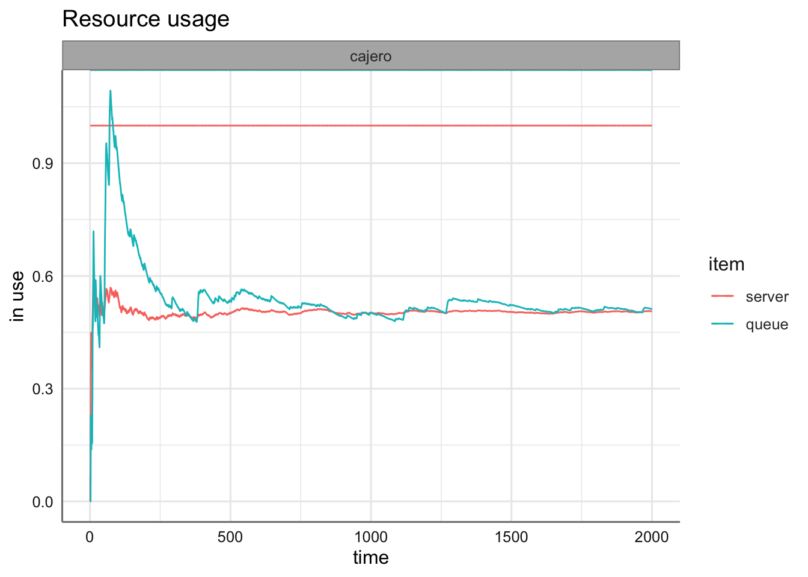
plot(arrivals, metric="waiting_time")## `geom_smooth()` using method = 'gam' and formula 'y ~ s(x, bs = "cs")'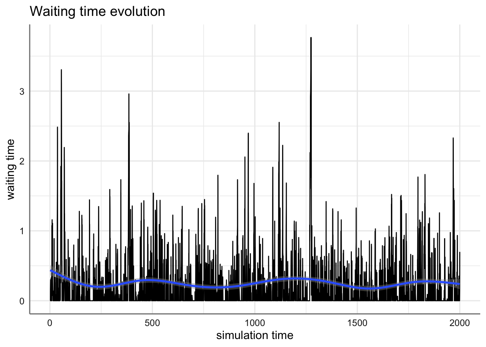
plot(arrivals, metric="activity_time")## `geom_smooth()` using method = 'gam' and formula 'y ~ s(x, bs = "cs")'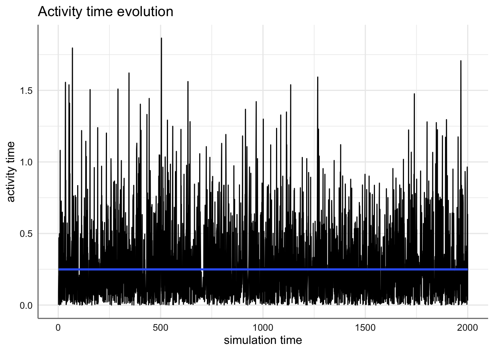
Si queremos inferir sobre el funcionamiento del sistema a largo plazo, necesitaremos muestras, obtenidas de varias réplicas. La replicación es recomendable llevarla a cabo con la librería parallel, que permite lanzar en paralelo varias réplicas simultáneas.
#library(parallel)
mm1.envs=mclapply(1:100,function(i) {
simmer() %>%
add_resource("cajero",capacity=1,queue_size=Inf) %>%
add_generator("cliente",mm1.cajero,function() rexp(100,lambda)) %>%
run(until=1000/lambda) %>%
wrap()
}, mc.set.seed=FALSE)Al recuperar las llegadas con get_mon_arrivals, obtenemos un data.frame con todas las llegadas, el instante de llegada (start_time) y salida (end_time), así como el tiempo en servicio -sin contar espera- (activity_time), un indicador de si ha finalizado la actividad (finished) y un índice de replicación (replication).
mm1.arrivals=get_mon_arrivals(mm1.envs)
head(mm1.arrivals)## name start_time end_time activity_time finished replication
## 1 cliente0 0.3373840 0.3988817 0.06149772 TRUE 1
## 2 cliente1 0.8873295 1.0936262 0.20629668 TRUE 1
## 3 cliente2 1.0175261 1.3095587 0.21593254 TRUE 1
## 4 cliente3 1.2768201 1.7538044 0.44424568 TRUE 1
## 5 cliente4 1.6875986 1.9712527 0.21744829 TRUE 1
## 6 cliente5 1.8805297 2.1871458 0.21589316 TRUE 1Con varias réplicas podríamos, por ejemplo, calcular el tiempo medio en el sistema (end_time-start_time), y con todas las medias, testar si el tiempo medio es superior o inferior a cualquier valor que marquemos, utilizando en este caso un test t-Student:
mm1.data=get_mon_arrivals(mm1.envs) %>%
group_by(replication) %>%
summarise(m=mean(end_time-start_time))
ggplot(mm1.data,aes(x=replication,y=m))+
geom_point()+
geom_line()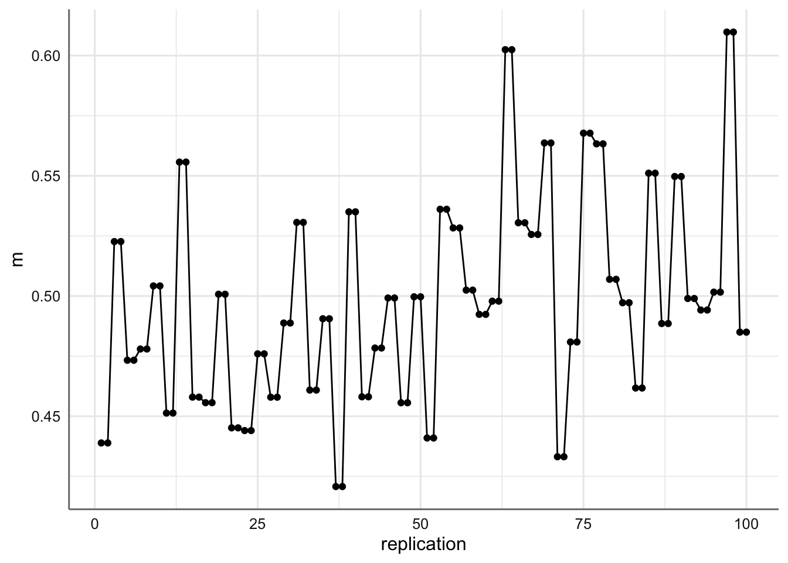
t.test(mm1.data$m,mu=0.5,alternative ="greater")##
## One Sample t-test
##
## data: mm1.data$m
## t = -0.51444, df = 99, p-value = 0.696
## alternative hypothesis: true mean is greater than 0.5
## 95 percent confidence interval:
## 0.4906473 Inf
## sample estimates:
## mean of x
## 0.4977877O estudiar la utilización de los recursos,
mm1.resources=get_mon_resources(mm1.envs)
plot(mm1.resources, metric="utilization")O incluso testar si el tamaño de la cola (o de sujetos en el sistema) ha sido cero (o cualquier otro valor),
mm1.data=get_mon_resources(mm1.envs) %>%
group_by(replication) %>%
summarise(n.cola=mean(queue),n.sistema=mean(system))
ggplot(mm1.data,aes(x=replication,y=n.cola))+
geom_point()+
geom_line()+
geom_point(aes(y=n.sistema),color="blue")+
geom_line(aes(y=n.sistema),color="blue")+
labs(x="Replicación",y="Usuarios",caption="Figura x. Usuarios en cola (negro) y en el sistema (azul).")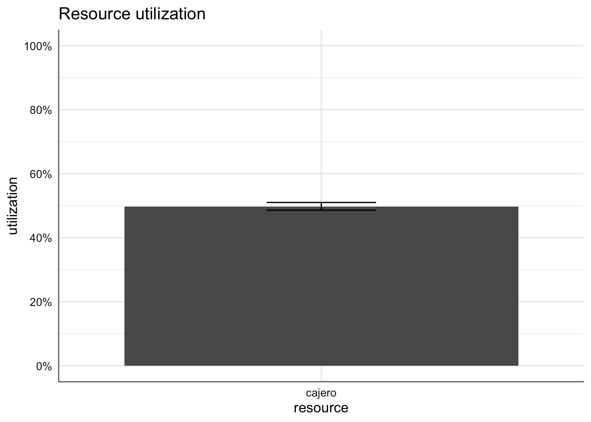
t.test(mm1.data$n.cola,mu=0,alternative = "greater")##
## One Sample t-test
##
## data: mm1.data$n.cola
## t = 72.742, df = 99, p-value < 2.2e-16
## alternative hypothesis: true mean is greater than 0
## 95 percent confidence interval:
## 0.7300316 Inf
## sample estimates:
## mean of x
## 0.7470844t.test(mm1.data$n.sistema,mu=1,alternative = "greater")##
## One Sample t-test
##
## data: mm1.data$n.sistema
## t = 44.214, df = 99, p-value < 2.2e-16
## alternative hypothesis: true mean is greater than 1
## 95 percent confidence interval:
## 1.477677 Inf
## sample estimates:
## mean of x
## 1.4963157.14.3 Gasolinera
El ejemplo de la gasolinera es ofrecido en Ucar (2020b) como una ejemplificación de un proceso de cadena de markov continuo en el tiempo. Una gasolinera tiene un único surtidor y no dispone de espacio de espera para los vehículos (si un vehículo llega mientras otro está utilizando el surtidor, ha de marcharse). Los vehículos llegan a la gasolinera según un proceso de Poisson de razón \(\lambda=3/20\) vehículos por minuto. De los vehículos que llegan, el 75% son coches y el resto motocicletas. El tiempo de carga de combustible responde a una distribución exponencial con media 8 minutos para los coches y 3 para las motocicletas.
Recordemos que un proceso de Poisson de parámetro \(\lambda\) implica una distribución de Poisson \(Po(\lambda t)\) para el número de usuarios del sistema transcurrido un tiempo \(t\) y una distribución \(Exp(\lambda)\) para los tiempos entre llegadas de los usuarios.
Puesto que se trata de un proceso continuo en el tiempo, definimos una función que ejecuta el proceso hasta un instante \(t\). El único surtidor de la gasolinera constituye el recurso del proceso, con capacidad 1 y tamaño de la cola 0, y las llegadas de vehículos se generan según una distribución \(Exp(\lambda)\). Al producirse una llegada, se deriva al surtidor, especificando amount=1 para provocar que si está ocupado, el vehículo se marcha (es rechazado). Puesto que el tiempo de recarga de combustible depende de si el vehículo es coche o motocicleta, y estos llegan en una proporción 3 a 1 (75% coches-25% motos), el tiempo de permanencia en el surtidor especificado con timeout se genera con probabilidad 0.75 con una \(Exp(1/8)\) y con probabilidad 0.25 con una \(Exp(1/3)\). Transcurrido ese tiempo, el vehículo abandona el sistema.
recarga<- function(t) {
vehiculo <- trajectory() %>%
seize("surtidor", amount=1) %>%
timeout(function() {
if (runif(1) < p) rexp(1, mu[1]) # coche
else rexp(1, mu[2]) # moto
}) %>%
release("surtidor", amount=1)
simmer() %>%
add_resource("surtidor", capacity=1, queue_size=0) %>%
add_generator("vehiculo", vehiculo, function() rexp(1, lambda)) %>%
run(until=t)
}Definiendo los valores de los parámetros, hacemos correr el sistema hasta el instante \(t=5000\), y visualizamos llegadas y recurso.
t=5000
lambda=3/20
mu=c(1/8,1/3)
p=0.75
gasolinera=recarga(t)
llegadas=get_mon_arrivals(gasolinera)
surtidor=get_mon_resources(gasolinera)
plot(llegadas, metric="activity_time")## `geom_smooth()` using method = 'loess' and formula 'y ~ x'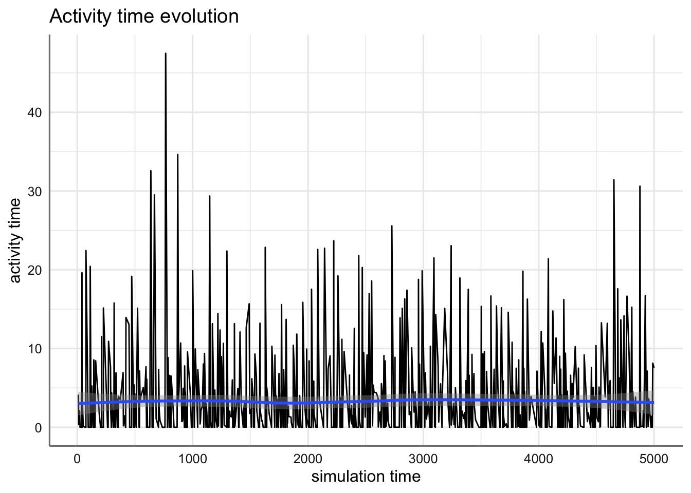
plot(surtidor, "usage","surtidor",items="system")+
geom_hline(yintercept=0.5)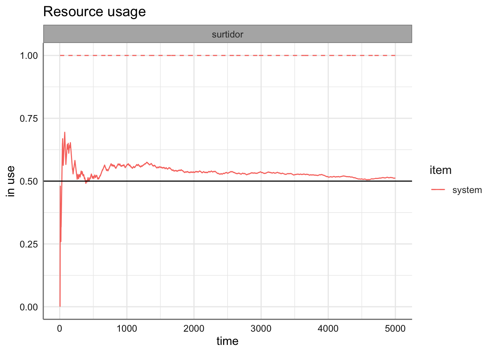
7.15 Referencias
Bache SM, Wickham H (2014). magrittr: A Forward-Pipe Operator for R. R package version 1.5. Available at https://CRAN.R-project.org/package=magrittr.
Banks J (2005). Discrete-Event System Simulation. Prentice-Hall International Series in Industrial and Systems Engineering. Pearson Prentice Hall.
Canadilla, P. (2019). Analysis of Queueing Networks and Models. Package ‘queueing.’ Available at https://cran.r-project.org/web/packages/queueing/.
Chubaty AM, McIntire EJB (2019). SpaDES: Develop and Run Spatially Explicit Discrete Event Simulation Models. R package version 2.0.3. Available at https://CRAN.R-project.org/package=SpaDES.
Ebert A (2018). queuecomputer: Computationally Efficient Queue Simulation. R package version 0.8.3. Available at https://CRAN.R-project.org/package=queuecomputer.
Ebert A, Wu P, Mengersen K, Ruggeri F (2017). Computationally Efficient Simulation of Queues: The R Package queuecomputer.” arXiv:1703.02151. ArXiv.org E-Print Archive. Available at http://arxiv.org/abs/1703.02151.
FishyOperations in R-Bloggers (2016). Simulating queueing systems with simmer. Available at https://www.r-bloggers.com/2016/04/simulating-queueing-systems-with-simmer/.
Kendall DG (1953). Stochastic Processes Occurring in the Theory of Queues and their Analysis by the Method of the Imbedded Markov Chain.” The Annals of Mathematical Statistics, 24(3), 338-354. Available at https://doi.org/10.1214/aoms/1177728975.
Lauwens B (2017). SimJulia.jl: Combined Continuous-Time / Discrete-Event Process Ori-ented Simulation Framework Written in Julia. Julia package version 0.5. Available at https://github.com/BenLauwens/SimJulia.jl.
Law AM, Kelton WD (2000). Simulation Modeling and Analysis. McGraw-Hill Series in Industrial Engineering and Management Science. McGraw-Hill.
Pidd M (1988). Computer Simulation in Management Science. John Wiley & Sons.
Shannon RE (1975). Systems Simulation: The Art and Science. Prentice-Hall.
Team SimPy (2017). SimPy: Discrete-Event Simulation for Python. Python package version 3.0.9. Available at https://simpy.readthedocs.io/en/stable.
Ucar, I., Smeets, B., Azcorra, A. (2019). “simmer: Discrete-Event Simulation for R.” Journal of Statistical Software, 90(2), 1-30. Available at https://doi.org/10.18637/jss.v090.i02.
Ucar, I., Smeets, B. (2019a). simmer: Discrete-Event Simulation for R. R package version 4.3.0. Available at https://CRAN.R-project.org/package=simmer.
Ucar, I., Smeets, B. (2019b). simmer.plot: Plotting Methods for simmer. R package version 0.1.15. Available at https://CRAN.R-project.org/package=simmer.plot.
Ucar, I., Smeets, B. (2020c) simmer: DES for R. Available at https://r-simmer.org/. Documentation is available at https://r-simmer.org/reference/.
Ucar, I. (2020a). Queueing systems, in simmer: DES for R. Available at https://r-simmer.org/articles/simmer-06-queueing.html.
Ucar, I. (2020b). Continuous-Time Markov Chains, in simmer: DES for R. Available at https://r-simmer.org/articles/simmer-07-ctmc.html.
Systems Simulation: The Art and Science (Prentice Hall, 1975).↩︎
Averill M. Law and W. David Kelton, Simulation Modeling and Analysis, 3rd Edition (McGraw-Hill Education, 2000).↩︎
Barry Nelson Jerry Banks John Carson and David Nicol, Discrete-Event System Simulation, Fifth Edition (Pearson, 2009), https://ggplot2.tidyverse.org.↩︎
Yong Luo Alex M Chubaty Eliot J B McIntire and Steve Cumming, SpaDES: Develop and Run Spatially Explicit Discrete Event Simulation Models, Vs. 2.0.7, 2021, https://cran.r-project.org/web/packages/SpaDES/index.html.↩︎
Team SimPy, “SimPy: Discrete-Event Simulation for Python. Python Package” (Web, 2017), https://simpy.readthedocs.io/en/stable.↩︎
Ben Lauwens, “SimJulia.jl: Combined Continuous-Time / Discrete-Event Process Oriented Simulation Framework Written in Julia. Julia Package” (Web, 2021), https://github.com/BenLauwens/SimJulia.jl.↩︎